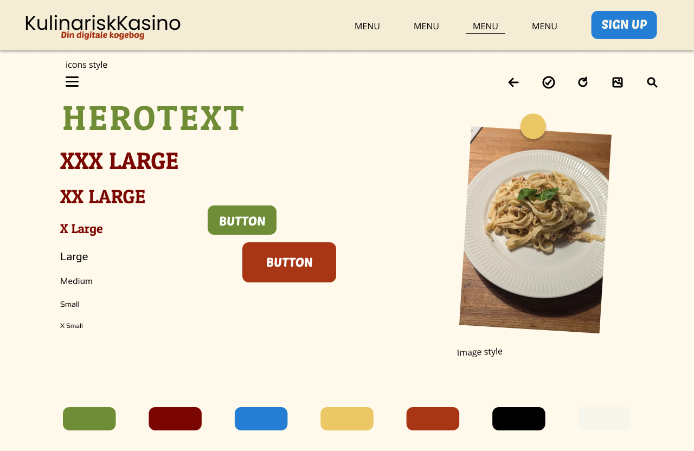

Tema 3 - UX/UI
Tema beskivelse
Temaet har omhandlet et website for et vilkårligt emne. Det som primært har været i fokus igennem temaet, var brugervenlighed og test samt hvordan man kan håndtere resultaterne.
Programmer og værktøj
- Figma
- Dokumentation, design og prototyper
- Kodning
- HTML, CSS og JavaScript
Emnesite
I emnesite projektet fik jeg et indblik i hvordan man kan tage højde for brugerens opfattelse af websitet. Heriblandt forskellige testmetoder, både i forhold til design og æstetik, men også forhold til layout og struktur af både hjemmeside og enkelte sider.
hvad har jeg lært
Til enmesite opgaven endte jeg med at blive mere interesseret i funktionaliteten af sitet frem for brugervenligheden, som det eller var meningen skulle være i fokus
galleri
Hifi wireframe
Hifi wireframe for emnesite
Hifi prototype
hifi prototype for emnesite

Hifi prototype
hifi prototype for emnesite